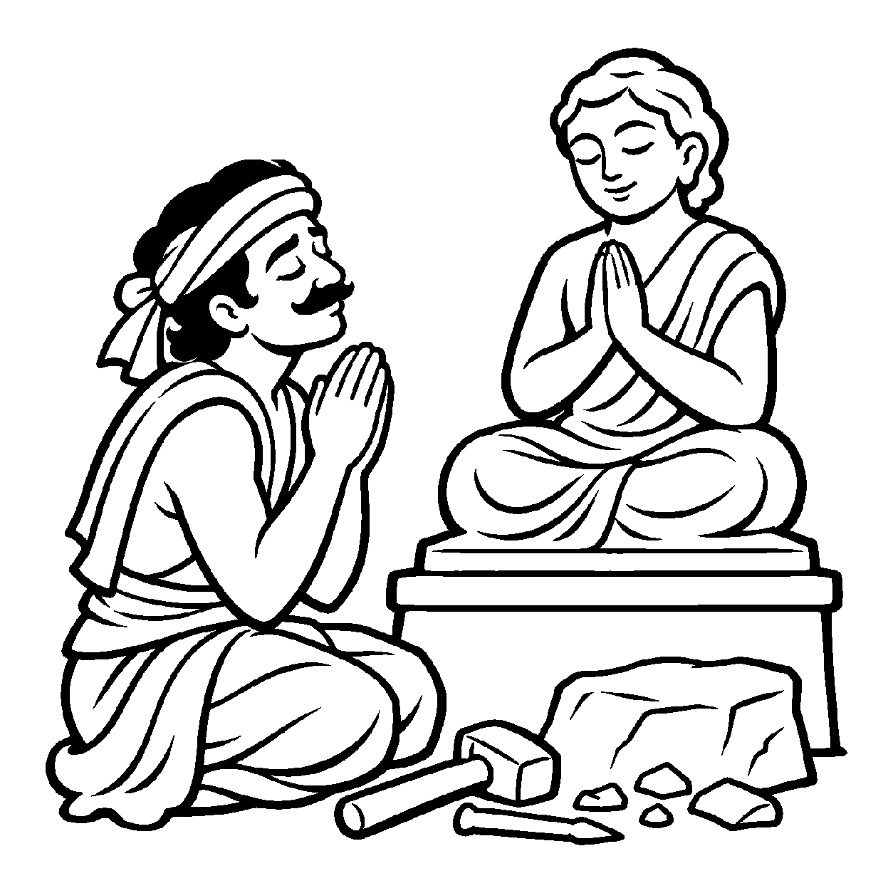

વસંતઋતુમાં બાગમાં એક ચંપાના વૃક્ષ પર સેંકડો ફૂલો ખીલી ઊઠે છે અને તેની મીઠી સુવાસ આખા બગીચામાં ફેલાય છે. બગીચામાં પ્રવેશતો વટેમાર્ગુ ખુશ થઈને બોલે છે: "આ આખા ઉપવનનો સહજ ગુણ જ સુગંધ છે!" વાસ્તવમાં ફૂલોની ખીલેલી મોસમ એ વૃક્ષોની એક ક્ષણિક ઋતુજન્ય પર્યાય છે, જ્યારે સુગંધ એ પુદ્ગલનો સ્વાભાવિક ગુણ છે. છતાં પણ મોસમી પર્યાયને જ સ્થાયી ગુણ માની લેવો એ લોકવ્યવહાર છે. તેવી જ રીતે જ્યારે ચેતનામાં પ્રગટેલી અહિંસા, ક્ષમા કે દયા જેવી પવિત્ર આચરણરૂપ સાધનાપર્યાયને જોઈને — "અહિંસા જ આ જીવનો મૂળ ગુણ છે, ક્ષમા જ એનો સ્વભાવ છે" — એમ પર્યાયને જ ગુણ તરીકે સ્થાપિત કરવો તે 'સ્વજાતિપર્યાયે સ્વજાતિગુણોપચારક અસદ્ભૂત વ્યવહાર' કહેવાય છે.
વાસ્તવિકતામાં ગુણ ત્રિકાળી અને અવિનાશી હોય છે, જ્યારે અહિંસા કે સંયમનું આચરણ એ સાધનાકાળમાં પ્રગટતી એક વિશેષ વિશુદ્ધ પર્યાય છે. પરંતુ વ્યવહારમાં જ્યારે સાધકની ઉચ્ચ દશાની પ્રશંસા થાય છે, ત્યારે તે પર્યાયને જ આત્માનો સહજ ગુણ કહી દેવામાં આવે છે. તેમજ પુદ્ગલના સંદર્ભમાં પણ દેહના વિશિષ્ટ ઘાટ કે ગોરાપણાની ક્ષણિક પર્યાયને જોઈને "આ વ્યક્તિ રૂપવાન ગુણવાળી છે" એમ પર્યાયને ગુણરૂપે સ્વીકારાય છે.
આ નય સાધકને સમજાવે છે કે સદ્ગુણોનું આચરણ ભલે વર્તમાન પર્યાયરૂપ હોય, પણ તે આત્માના પરમ શાશ્વત સ્વભાવ તરફ લઈ જનારી સીડી છે.
અહિંસા પર્યાય નિર્મળી, ગુણ કહી સ્તુતિ થાય;
પર્યાય મહીં ગુણ સ્થાપતાં, વ્યવહારે મલકાય.
ક્ષમા દયા આચરણ છે, પર્યાયનો શણગાર;
સ્વજાતિ ઉપચાર સમજી, લહે આત્મ ઉદ્ધાર.
સાધકને સમજાવે છે કે સદ્ગુણોનું આચરણ ભલે વર્તમાન પર્યાયરૂપ હોય, પણ તે આત્માના પરમ શાશ્વત સ્વભાવ તરફ લઈ જનારી સીડી છે.

એક નગરમાં સોમદેવ નામનો એક કુશળ શિલ્પકાર રહેતો હતો. તે સ્વભાવે અત્યંત અહંકારી અને ક્રોધી હતો. એક વખત નગરમાં એક જ્ઞાની મુનિ પધાર્યા. તેમના દર્શનથી સોમદેવનું હૃદય પીગળી ગયું. તેણે ગુસ્સો છોડી દીધો અને મુનિરાજની સેવા માટે એક સુંદર, નમ્ર મૂર્તિ બનાવીને નગરજનો સામે મૂકી. લોકો તેની પ્રશંસા કરવા લાગ્યા: "સોમદેવ તો જન્મથી જ નમ્રતાનો અવતાર છે! ક્ષમા તો એનો જન્મજાત ગુણ છે!" સોમદેવ મનમાં મૂંઝાયો: "હું તો વર્ષોથી ક્રોધી હતો. આજે કેવળ થોડા દિવસથી મેં ગુસ્સો દાબ્યો છે, તો શું નમ્રતા મારો કાયમી ગુણ બની ગઈ? જો કાલે ફરી ગુસ્સો આવશે તો આ ગુણ ક્યાં જશે?" તે પોતાના પર્યાયગત પરિવર્તન અને ગુણના સ્થાયીપણા વચ્ચે મૂંઝાઈ ગયો.
તે મુનિશ્રી પાસે ગયો અને પોતાનો સંશય રજૂ કર્યો. મુનિરાજે સ્નેહથી કહ્યું: "સોમદેવ! સ્વજાતિપર્યાયે સ્વજાતિગુણોપચારક અસદ્ભૂત વ્યવહારને સમજ! તેં જે ક્ષમા અને નમ્રતા દર્શાવી છે તે તારી સાધનાની તાજી પ્રગટેલી પર્યાય છે. લોકો તારી આ પર્યાયને જોઈને તેને 'ગુણ' કહે છે, એ કેવળ પર્યાયમાં ગુણનો વ્યવહારિક ઉપચાર છે! આ પ્રશંસાથી અભિમાની ન બનતો, પણ એ સમજજે કે આ પર્યાય તારા આત્માના મૂળ સ્વભાવ તરફ આગળ વધવાનું પગથિયું છે. જો તું આ પર્યાયને સાચવી રાખીશ તો એક દિવસ તે તારા કાયમી સ્વભાવરૂપ બની જશે." સોમદેવની ભ્રાંતિ દૂર થઈ ગઈ. પ્રશંસાના મોહમાંથી મુક્ત થઈને તેણે અંતરમુખ સાધના આદરી અને તેનું ચિત્ત પરમ વિશ્રામમાં લીન થઈ ગયું.
જો જીવ ક્ષણિક સદ્ગુણપર્યાયને જ કાયમી સિદ્ધિ માનીને સંતોષ માની લે, તો તે સાધનામાં પ્રમાદી બનીને ફરી પતન પામે છે. પરદ્રવ્યો કે ક્ષણિક સંયોગોને જ સર્વસ્વ માની લેવાથી મમત્વ અને પરિગ્રહનો ભાર વધે છે, જે ચિત્તને સદા આકુળ-વ્યાકુળ રાખી આધ્યાત્મિક જાગૃતિને રૂંધી નાખે છે.
આ નય પર્યાયની ક્ષણિકતાનો વિવેક રાખીને પણ સદ્ગુણોના અભ્યાસ દ્વારા આત્માને આત્મસ્વરૂપમાં સ્થિર થવાની પ્રેરણા આપે છે. તે વ્યવહારિક સંયોગોની મર્યાદા દર્શાવીને પણ આંતરિક ગુણો પ્રગટાવવાની પ્રેરણા આપે છે, જેથી સાધક નિજ ચૈતન્ય સ્વરૂપમાં મહામૌનમાં અંતર્લીન થઈ જાય છે.